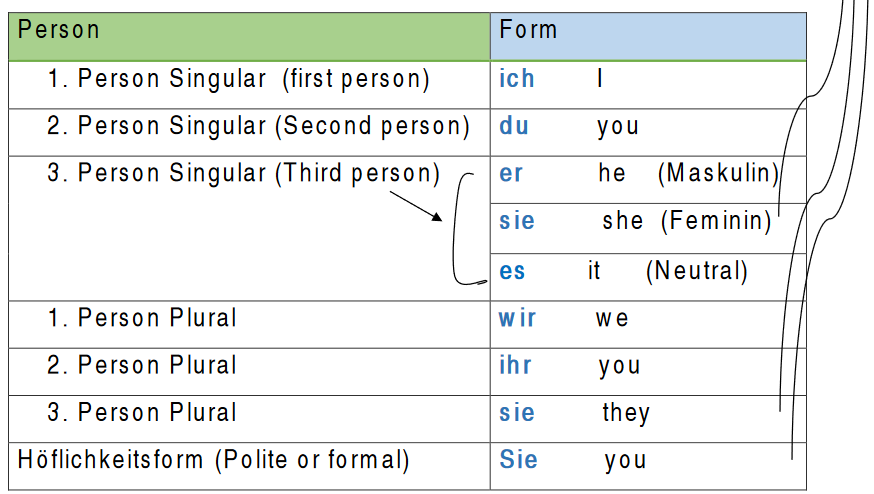

Personal pronouns – Personalpronomen
Personal pronouns – Personalpronomen What are personal pronouns?
The personal pronouns are used to replace people or things.
Beispiel (example):
Sara lernt Deutsch. Sie lernt Deutsch
Sara learns German. She learns German
There are 3 pronouns of 'sie'
= she =they = you, formal.
The personal pronouns in German:

As you can see in the table, German has different ways for addressing people.
- Use du (Singular) and ihr (Plural) for friends, children and relatives.
- Use Sie (singular and plural) with a capital letter for people whom you do not know well or whom you would address by 'Mr' or 'Mrs'.